Análisis coste-eficacia incremental
Objetivos de aprendizaje y esquema
Objetivos de aprendizaje
Diferenciar entre ratios CEA medios e incrementales
Caracterizar los problemas de decisión según sean competitivos o no competidores
Calcular e interpretar los ICER
Practicar la exclusión de estrategias “dominadas” y “ampliamente dominadas”. dominadas” y “ampliamente dominadas”
Identificar las estrategias asistenciales de “alto valor” frente a las de “bajo valor”, basándose en umbrales de rentabilidad generalmente aceptados
Esquema
- Revisión del coeficiente de ACE
- CEA no competidores frente a CEA competidores
- CEA incremental
- Dominancia y dominancia ampliada
- Comparadores
- Umbrales CEA
Análisis Coste-Efectividad
Análisis Coste-Efectividad
Cuantifica cómo maximizar la calidad y cantidad de vida entre alternativas en competencia, dados unos recursos restringidos
Es una medida explícita de la relación calidad-precio
Una herramienta de toma de decisiones a NIVEL DE POBLACIÓN
El análisis coste-eficacia NO ES
- Reducción indiscriminada de costes
- Reducción
- Para la toma de decisiones a nivel individual
- La única herramienta para la toma de decisiones
Análisis Coste-Efectividad
Coste de la intervención
Coste de la alternativa
Beneficio de la intervención
Beneficio de la alternativa
Análisis Coste-Efectividad
Coste de la intervención
Coste de la alternativa
Beneficio de la intervención
Beneficio de la alternativa
Relación coste-eficacia
Coste de la intervención
\quad - \quad
Coste de la alternativa
\frac{\quad \quad \quad \quad \quad \quad \quad \quad \quad \quad \quad \quad \quad \quad \quad \quad \quad \quad \quad \quad \quad \quad \quad {\quad}{\quad\quad\quad\quad\quad\quad\quad\quad\quad\quad\quad\quad\quad\quad\quad\quad\quad\quad\quad\quad\quad\quad\quad\quad\quad\quad\quad\quad}
Beneficio de la intervención
\quad - \quad
Beneficio de la alternativa
Relación coste-eficacia
C_1
\quad - \quad
C_0
\frac{\quad \quad \quad \quad \quad \quad \quad \quad \quad \quad \quad \quad \quad \quad \quad \quad \quad \quad \quad \quad \quad \quad \quad {\quad}{\quad\quad\quad\quad\quad\quad\quad\quad\quad\quad\quad\quad\quad\quad\quad\quad\quad\quad\quad\quad\quad\quad\quad\quad\quad\quad\quad\quad}
E_0
\quad - \quad
E_1
Relación coste-eficacia
\Delta C
\frac{\quad \quad \quad \quad }{\quad \quad \quad \quad \quad \quad }
\Delta E
Relación coste-efectividad incremental
El más utilizado, ya que para la mayoría de las enfermedades ya existe algún tratamiento disponible. tratamiento disponible.
- C_1: valor actual neto de los costes totales a lo largo de la vida del nuevo tratamiento
- C_0: valor actual neto de los costes totales a lo largo de la vida del tratamiento por defecto tratamiento por defecto
- E_1: eficacia del nuevo tratamiento, medida en esperanza de vida esperada esperanza de vida esperada, años de vida ajustados por calidad (AVAC) o años de vida ajustados por discapacidad (AVAD), o algún resultado sanitario relevante para la decisión.
- E_0: eficacia del tratamiento por defecto
\frac{C_1 - C_0 \quad (\Delta C)}{E_1 - E_0 \quad (\Delta E)}
Árbol de decisión de enfermedades neurológicas
(De ayer)

Resultados
- C_{treat} = coste esperado de la estrategia tratar a todos.
- C_{no treat} = coste esperado de la estrategia no tratar a nadie.
- C_{biopsy} = coste esperado de la estrategia de biopsia.
Resultados
- C_{treat} = coste esperado de la estrategia tratar a todos.
- C_{no treat} = coste esperado de la estrategia “no tratar a nadie”.
- C_{biopsy} = coste esperado de la estrategia de biopsia.
- E_{treat} = esperanza de vida esperada de la estrategia de tratar a todos.
- E_{no tratar} = esperanza de vida esperada de la estrategia “no tratar a nadie”.
- E_{biopsy} = esperanza de vida esperada de la estrategia de biopsia.
Resultados en Amua
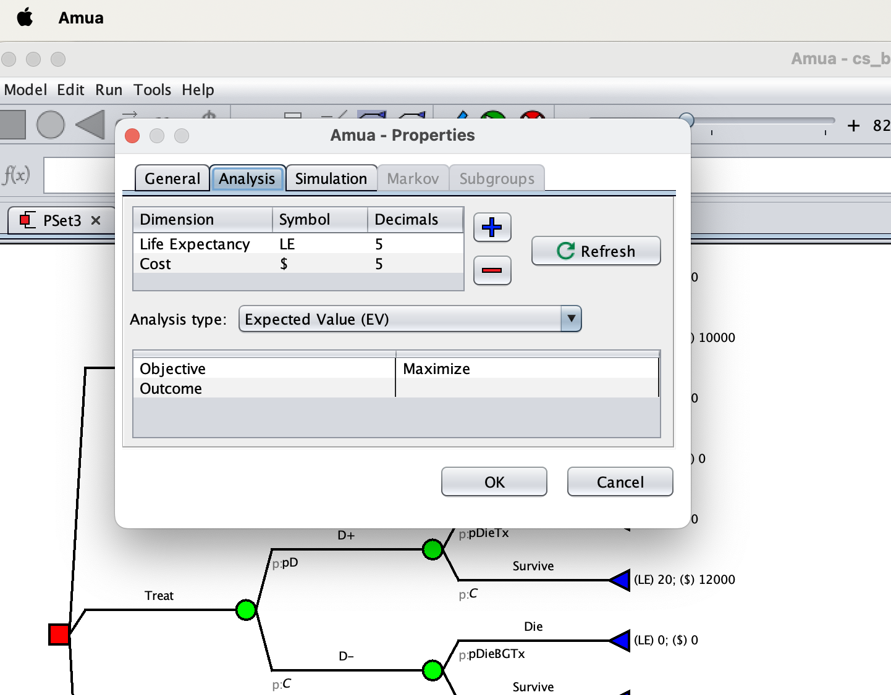Tratar todo frente a no tratar nada
Estrategia: No tratar a nadie 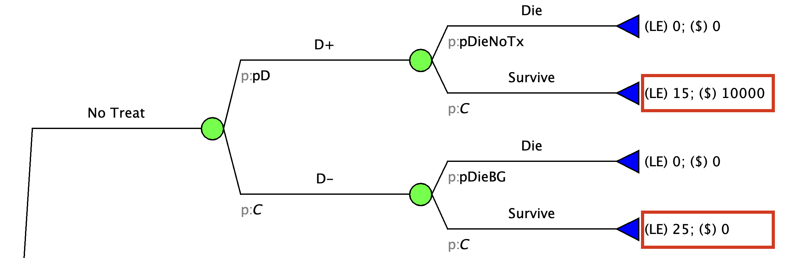
Tratar a todos vs. No tratar a nadie
Estrategia: Tratar a todos 
Conclusiones clave (por ahora)
- El tratamiento produce una mayor esperanza de vida para los enfermos, pero tiene un coste.
- El tratamiento produce una esperanza de vida más baja para los que no tienen la enfermedad, y también tiene un coste. enfermedad, y también tiene un coste.
- La biopsia puede ayudar a equilibrar estos dos resultados dirigiendo mejor tratamiento, pero también conlleva costes y riesgos.
- El ACE incremental proporciona un marco transparente para cuantificar y sopesar estas consideraciones. sopesar estas consideraciones.
Relación coste-eficacia media
Caso especial en el que se supone que C_0 y E_0 son cero.
- C_1: valor actual neto de los costes totales a lo largo de la vida del nuevo tratamiento
- C_0: Se supone cero
- E_1: eficacia del nuevo tratamiento, medida en esperanza de vida esperada esperanza de vida esperada, años de vida ajustados por calidad (AVAC) o años de vida ajustados por discapacidad (AVAD), o algún resultado sanitario relevante para la decisión.
- E_0: Se supone cero
ICER &= \frac{C_1 - 0}{E_1 - 0} ICER &= \frac{C_1 - 0}{E_1 - 0} \\\frac{C_1}{E_1 - 0} &= \frac{C_1}{E_1 } \fin{alineado}
CEA no competidores vs. competidores
Uso de CEA en dos situaciones
- Compras compulsivas: El problema de decisión tiene programas programas/intervenciones.
- Cada programa se compara con una alternativa nula. calcular una relación coste-eficacia “media”.
Uso del ACE en dos situaciones
- Elección competitiva: El problema de decisión tiene programas programas/intervenciones para el mismo fin; estas opciones son mutuamente excluyentes.
- Dos o más alternativas activas además de la opción nula.
- Es necesario calcular una “relación coste-eficacia incremental”, que nos da el coste añadido por unidad de beneficio añadido de una opción, en relación con la siguiente opción menos costosa
Problema de decisión no competitiva (de compra)
**¿Cómo podemos medir la prioridad relativa de varios programas sanitarios que compiten por unos recursos limitados? que compiten por unos recursos limitados?
- Programa de enfermedades cardiovasculares
- Programa de maternidad segura
- Iniciativa de prevención del VIH
- Vacunación infantil
- Detección de la depresión
Supuestos
- Se supone que las alternativas del programa son independientes
- La restricción presupuestaria es la única limitación
- Ni el coste neto ni la eficacia neta dependen de qué otros programas se seleccionen
- Se supone que los programas son divisibles. implementados]
Objetivos: El problema de las compras compulsivas
Maximizar la eficacia neta total (beneficio para la salud) de los programas seleccionados.
No salirse del presupuesto.
El problema de las compras compulsivas
Paso 1: - Descartar programas que cuestan $ pero tienen efectos negativos para la salud
- Dominado por la alternativa de “ningún programa”
El problema de las compras compulsivas
Paso 2:
- Seleccionar programas que ahorren costes y ofrezcan beneficios; el ahorro neto puede también puede añadirse al presupuesto
- Ahorro de costes comparado con la alternativa de no programa
El problema de las compras compulsivas
Paso 3:
- Clasificar otros programas en orden ascendente según su ratio coste-eficacia relación coste-eficacia (de menor a mayor)
- A continuación se seleccionan los programas del de menor a mayor coste hasta agotar el presupuesto. de programas seleccionados dependerá de la restricción presupuestaria
El problema de las compras compulsivas
Pasos 1 y 2: Descartar las opciones dominadas y seleccionar intervenciones que ahorren costes de ahorro
| Program | Cost | QALYs | Status |
|---|---|---|---|
| A | 27 | 30 | |
| B | 30 | 20 | |
| C | 56 | 70 | |
| D | 20 | 40 | |
| E | 30 | 50 | |
| F | 50 | 75 | |
| G | 40 | -30 | Ruled Out |
| H | -20 | 20 | Adopted |
El problema de las compras compulsivas
- Presupuesto inicial: $80
- Ahorro presupuestario: $20.
- Presupuesto total: \80 dólares + 20 dólares: #a8d4a7;“} = $100
| Program | Cost | QALYs | Status |
|---|---|---|---|
| A | 27 | 30 | |
| B | 30 | 20 | |
| C | 56 | 70 | |
| D | 20 | 40 | |
| E | 30 | 50 | |
| F | 50 | 75 | |
| G | 40 | -30 | Ruled Out |
| H | -20 | 20 | Adopted |
El problema de las compras compulsivas
- Calcular la relación coste-eficacia media.
| Program | Cost | QALYs | C/E |
|---|---|---|---|
| A | 27 | 30 | 0.90 |
| B | 30 | 20 | 1.50 |
| C | 56 | 70 | 0.80 |
| D | 20 | 40 | 0.50 |
| E | 30 | 50 | 0.60 |
| F | 50 | 75 | 0.67 |
El problema de las compras compulsivas
- Calcular la relación coste-eficacia media.
- Ordenar (por C/E) en orden ascendente .
| Program | Cost | QALYs | C/E |
|---|---|---|---|
| D | 20 | 40 | 0.50 |
| E | 30 | 50 | 0.60 |
| F | 50 | 75 | 0.67 |
| C | 56 | 70 | 0.80 |
| A | 27 | 30 | 0.90 |
| B | 30 | 20 | 1.50 |
El problema de las compras compulsivas
- Calcular los costes acumulados
- Determinar qué es adoptable en función de la restricción presupuestaria global ($100)
- Calcular los efectos acumulados (AVAC)
El problema de las compras compulsivas
Presupuesto: $100
| Program | Cost | QALYs | C/E | Cumulative Cost | Cumulative QALYs |
|---|---|---|---|---|---|
| D | 20 | 40 | 0.50 | 20 | 40 |
| E | 30 | 50 | 0.60 | 50 | 90 |
| F | 50 | 75 | 0.67 | 100 | 165 |
| C | 56 | 70 | 0.80 | 156 | 235 |
| A | 27 | 30 | 0.90 | 183 | 265 |
| B | 30 | 20 | 1.50 | 213 | 285 |
El problema de las compras compulsivas
Presupuesto: $100
| Program | Cost | QALYs | C/E | Cumulative Cost | Cumulative QALYs |
|---|---|---|---|---|---|
| D | 20 | 40 | 0.50 | 20 | 40 |
| E | 30 | 50 | 0.60 | 50 | 90 |
| F | 50 | 75 | 0.67 | 100 | 165 |
| C | 56 | 70 | 0.80 | 156 | 235 |
| A | 27 | 30 | 0.90 | 183 | 265 |
| B | 30 | 20 | 1.50 | 213 | 285 |
| Budget | Adopted | Effect | Threshold |
|---|---|---|---|
| 100 | D, E, F, H | 165 | 0.67 |
El problema de las compras compulsivas
Presupuesto: $150
| Program | Cost | QALYs | C/E | Cumulative Cost | Cumulative QALYs |
|---|---|---|---|---|---|
| D | 20 | 40 | 0.50 | 20 | 40 |
| E | 30 | 50 | 0.60 | 50 | 90 |
| F | 50 | 75 | 0.67 | 100 | 165 |
| C | 56 | 70 | 0.80 | 156 | 235 |
| A | 27 | 30 | 0.90 | 183 | 265 |
| B | 30 | 20 | 1.50 | 213 | 285 |
| Budget | Adopted | Cost | Effect | Threshold | Remaining |
|---|---|---|---|---|---|
| 150 | D, E, F, H | 100 | 165 | 0.67 | 50 |
El problema de las compras compulsivas
Presupuesto: $150
| Program | Cost | QALYs | C/E | Cumulative Cost | Cumulative QALYs |
|---|---|---|---|---|---|
| D | 20 | 40 | 0.50 | 20 | 40 |
| E | 30 | 50 | 0.60 | 50 | 90 |
| F | 50 | 75 | 0.67 | 100 | 165 |
| C | 56 | 70 | 0.80 | 156 | 235 |
| A | 27 | 30 | 0.90 | 183 | 265 |
| B | 30 | 20 | 1.50 | 213 | 285 |
| Budget | Adopted | Cost | Effect | Threshold | Remaining |
|---|---|---|---|---|---|
| 150 | D, E, F, H | 100 | 165 | 0.67 | 50 |
El problema de las compras compulsivas
Presupuesto: $150
| Program | Cost | QALYs | C/E | Cumulative Cost | Cumulative QALYs |
|---|---|---|---|---|---|
| D | 20 | 40 | 0.50 | 20 | 40 |
| E | 30 | 50 | 0.60 | 50 | 90 |
| F | 50 | 75 | 0.67 | 100 | 165 |
| C (89.3%) | 56 | 70 | 0.80 | 156 | 235 |
| A | 27 | 30 | 0.90 | 183 | 265 |
| B | 30 | 20 | 1.50 | 213 | 285 |
| Budget | Adopted | Cost | Effect | Threshold | Remaining |
|---|---|---|---|---|---|
| 150 | D, E, F, C (89.3%), H | 150 | 226.6 | 0.8 | 0 |
- quedan $50 pero el programa C cuesta $56 (50/56 = 0,89)
- 0,89*70 AVAC del programa C = 62,3 AVAC
Summary: El problema de las compras compulsivas
Maximizar la eficacia neta total (beneficio para la salud)
Ajustarse al presupuesto
Puede hacer lo mismo con otros objetivos (por ejemplo, minimizar costes, someter la decisión a la restricción de “beneficio mínimo”, etc.)
Uso de la ACE en dos situaciones
- Compras compulsivas: El problema de decisión tiene programas/intervenciones.
Uso de la ACE en dos situaciones
- Elección competitiva: El problema de decisión tiene programas programas/intervenciones para el mismo fin; estas opciones son mutuamente excluyentes.
Objetivos: Problema de elección competitiva
No se puede aplicar más de una estrategia a la vez.
La relación coste-efectividad incremental está por debajo de un umbral de adopción preespecificado.
¿Cuál es la diferencia?
Juerga de compras
- Puede seleccionar varios programas
- Diferentes costes y efectos asociados a cada uno
- Requiere el cálculo de una Relación coste-eficacia media.
Elección competidora
- Los programas se excluyen mutuamente.
- Diferentes costes y efectos asociados a cada uno.
- Requiere el cálculo de una Relación Coste-Efectividad Incremental (RCEI). (ICER)
Incremental CEA
1. Incremental CEA en imágenes
1. Calcular costes y efectos incrementales
- A menudo, se define una estrategia que refleja la práctica actual (“statu quo”, “no hacer nada”, “historia natural”). no hacer nada”, “historia natural”).
- A continuación se calculan los costes y efectos de cada estrategia en relación con el respecto al statu quo.
- Representar gráficamente la diferencia de costes y efectos con los efectos sobre la salud en el eje de abscisas y los efectos sobre los costes en el eje de ordenadas. en el eje de abscisas y los efectos en los costes en el eje de ordenadas.
1. Calcular el coste y los efectos
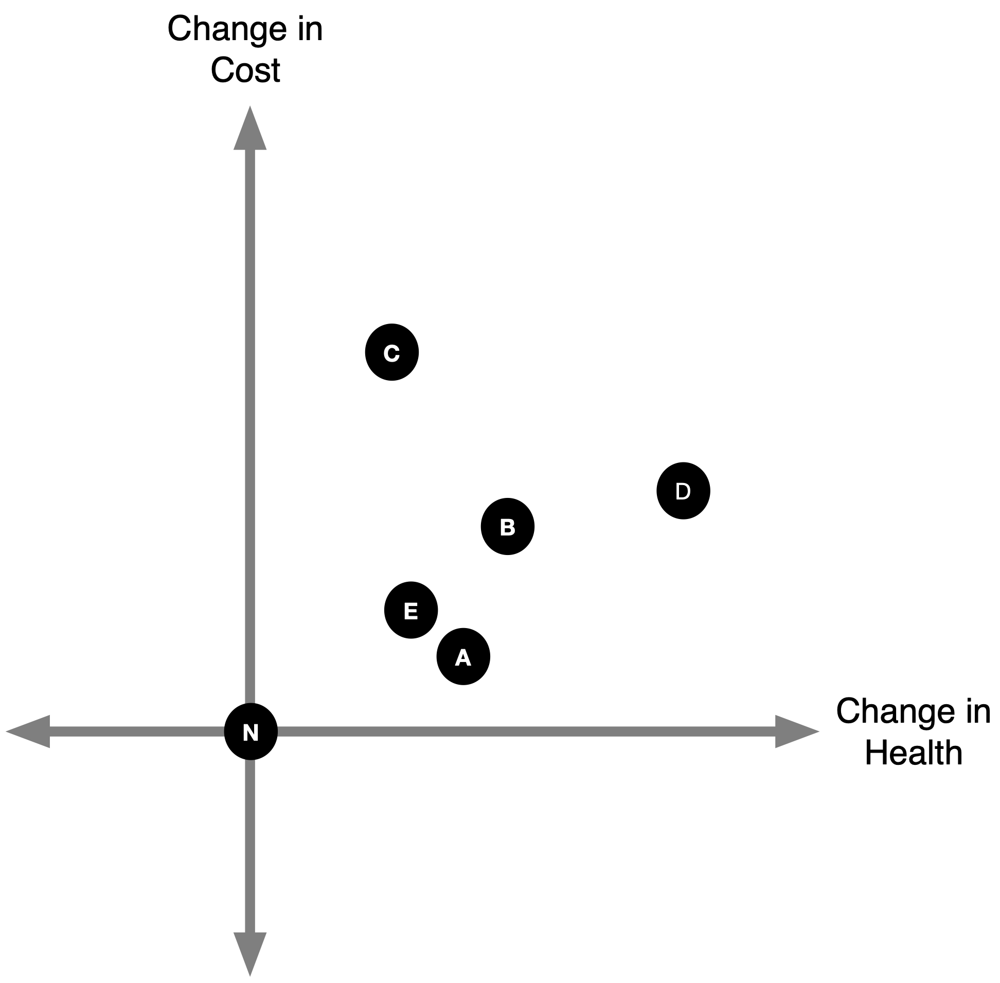Identificar las estrategias dominadas
- Podemos descartar cualquier estrategia que resulte en menos salud a mayor coste.
Identificar Estrategias Dominadas
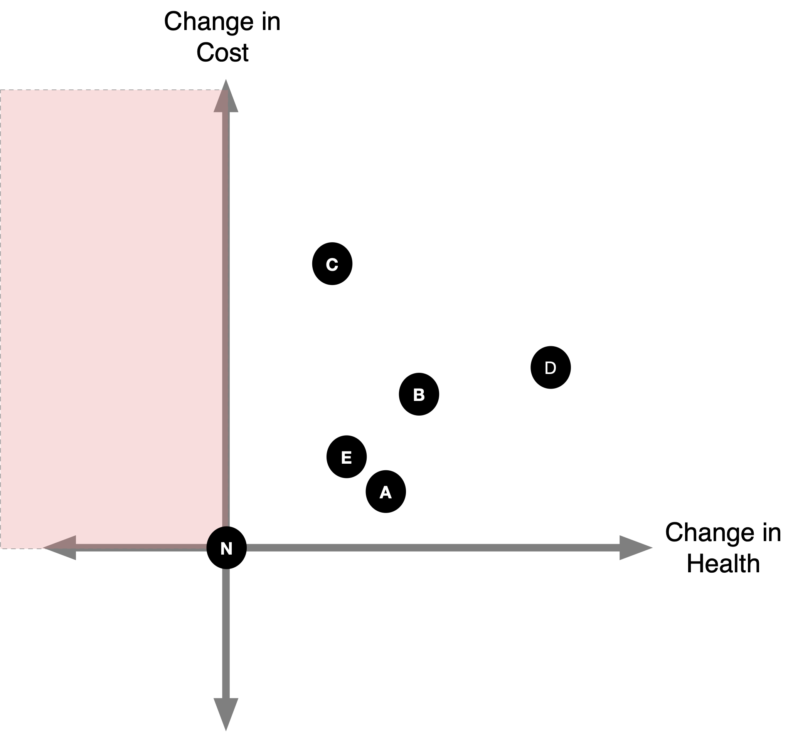Identificar Estrategias Dominadas
- También podemos descartar estrategias en las que alguna otra estrategia competidora estrategia resulta en más (o igual) salud a menor (o igual) coste.
- Esto se conoce como dominancia “fuerte”.
Identificar Estrategias Dominadas
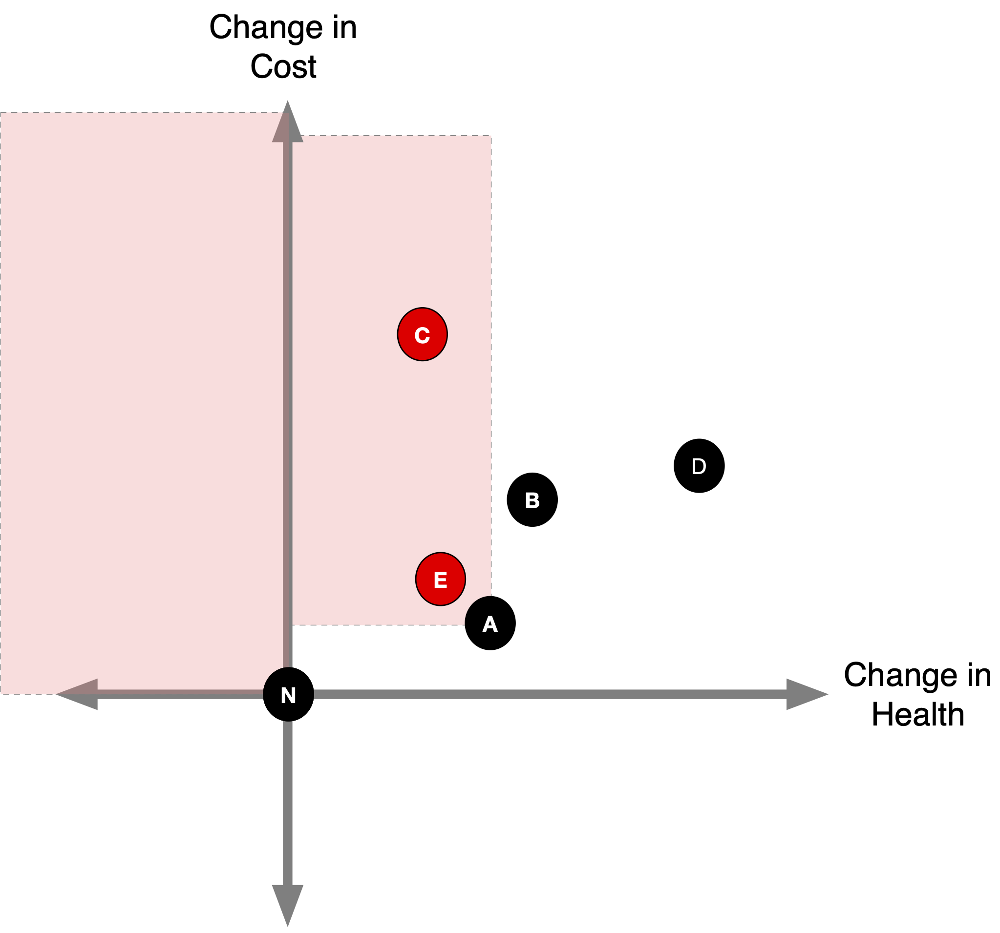Identificar Estrategias Dominantes

¿Y la estrategia B?
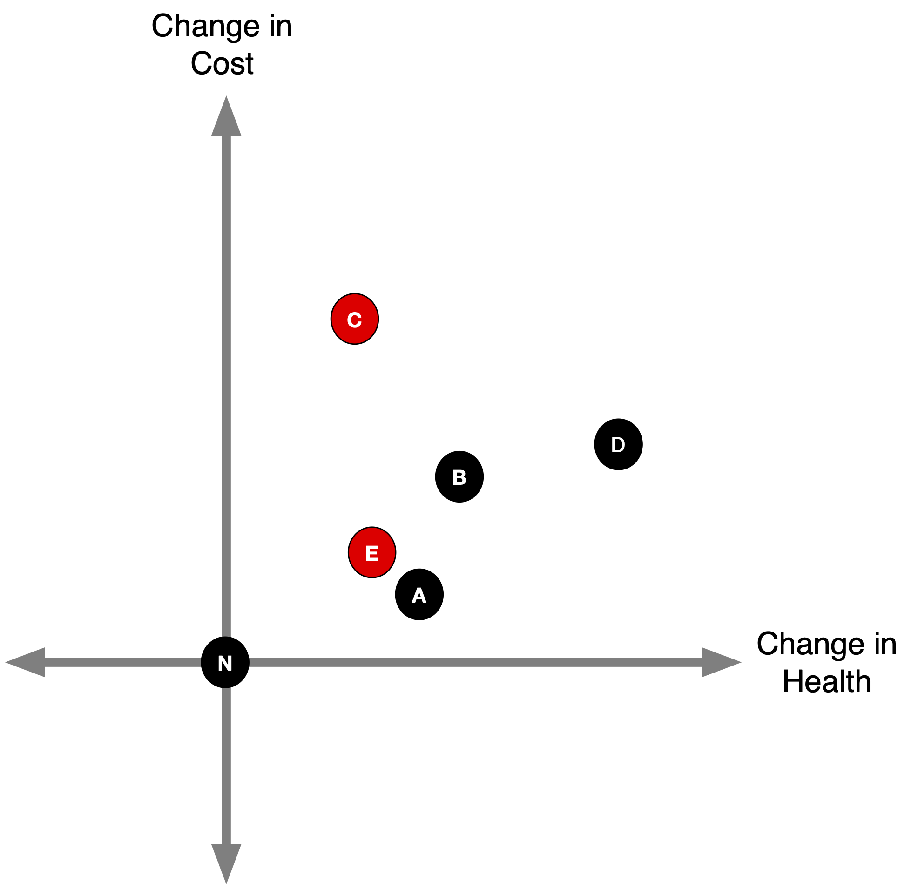Estrategias híbridas
- Supongamos que es factible implementar parcialmente las estrategias A y D.
- Por ejemplo, podríamos implementar A para el 90% de la población y D para el 10% de la población, o viceversa.
90% A, 10% D
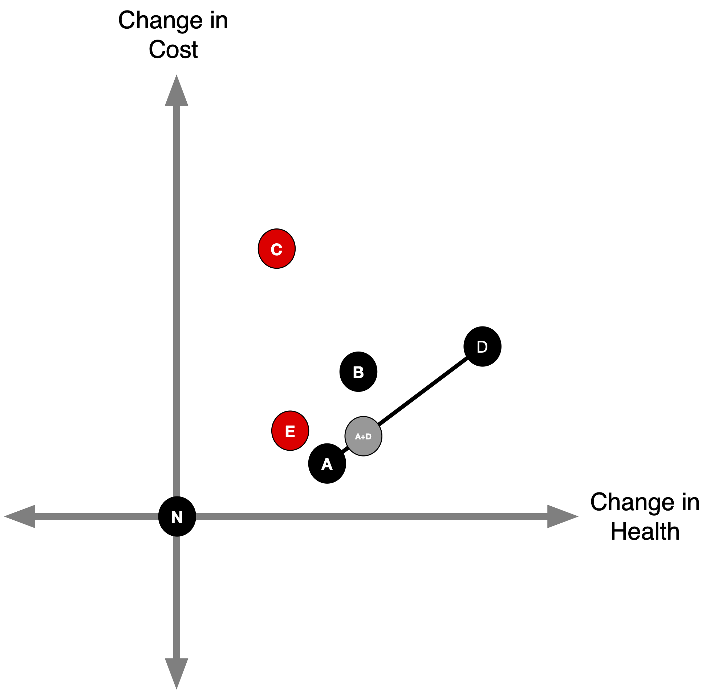10% A, 90% D

50% A, 50% D
- ¿Podemos hacer alguna afirmación sobre B ahora?

Dominancia Extendida (Débil)
- B se descarta por dominancia extendida (“débil”).
Dominancia extendida (débil)

Frontera de Eficiencia
::: no incremental - La frontera de eficiencia es el conjunto de estrategias no dominadas. :::

ICERs
- La pendiente de una línea que une dos puntos es la relación coste-eficacia coste-efectividad incremental comparando esas estrategias. Más más adelante
2. CEA incremental en tablas
CEA incremental
Tenga en cuenta que el siguiente ejemplo utiliza estrategias y ¡valores que el ejemplo utilizado en las imágenes anteriores!
CEA incremental
Calcular los costes y efectos de cada estrategia.
Ordenar la tabla por costes en orden ascendente.1
Calcular la ICER en función de la diferencia de costes y efectos.
Determinar las estrategias dominadas (ICER<0).
Volver a calcular las RCEI tras eliminar las estrategias dominadas.
Determinar las estrategias descartadas por dominancia extendida.
Volver a calcular las RCEI tras descartar todas las estrategias dominadas.
Repetir 5-7 según sea necesario.
CEA incremental
1. Calcular los costes y efectos de cada estrategia.
| Strategy | Cost | QALYs |
|---|---|---|
| A | 16,454 | 17.33 |
| D | 24,504 | 17.49 |
| C | 33,443 | 17.58 |
| B | 21,457 | 17.41 |
| E | 43,332 | 17.49 |
CEA incremental
- Calcular costes y efectos para cada estrategia.
2. Ordenar la tabla por costes en orden ascendente.1
| Strategy | Cost | QALYs |
|---|---|---|
| A | 16,454 | 17.332 |
| B | 21,457 | 17.409 |
| D | 24,504 | 17.491 |
| C | 33,443 | 17.580 |
| E | 43,332 | 17.491 |
CEA incremental
Calcule los costes y efectos de cada estrategia.
Ordenar la tabla por costes en orden ascendente.1
3. Calcular la ICER en función de la diferencia de costes y efectos.
| Strategy | Cost | dCost | QALYs | dQALYs | ICER |
|---|---|---|---|---|---|
| A | 16,454 | 17.332 | |||
| B | 21,457 | 5,003 | 17.409 | 0.077 | 64,895 |
| D | 24,504 | 3,048 | 17.491 | 0.082 | 36,989 |
| C | 33,443 | 8,939 | 17.580 | 0.088 | 101,292 |
| E | 43,332 | 9,888 | 17.491 | -0.088 | -112,048 |
Incremental CEA
Calcular costes y efectos para cada estrategia.
Ordena la tabla por costes en orden ascendente1.
- Calcular la ICER en función de la diferencia de costes y efectos.
4. Determinar estrategias dominadas (ICER<0)
Determinar Estrategias Dominadas
- Echemos un vistazo a nuestra tabla.
- Observe que la estrategia E tiene una ICER negativa. ¿A qué se debe?
- La estrategia E aumenta los costes pero reduce los AVAC.
- Por lo tanto, nos iría mejor seleccionando la estrategia C (obtendríamos más beneficios para la salud por menos dinero…)
| Strategy | Cost | dCost | QALYs | dQALYs | ICER | |
|---|---|---|---|---|---|---|
| A | 16,454 | 17.332 | ||||
| B | 21,457 | 5,003 | 17.409 | 0.077 | 64,895 | |
| D | 24,504 | 3,048 | 17.491 | 0.082 | 36,989 | |
| C | 33,443 | 8,939 | 17.580 | 0.088 | 101,292 | |
| E | 43,332 | 9,888 | 17.491 | -0.088 | -112,048 |
Determinar Estrategias Dominadas
- La dominancia fuerte se refiere a situaciones en las que una estrategia es preferida sobre otra tanto en costes como en efectos sobre la salud (p. ej., AVAC), AVAC).
- Cuando identificamos una opción fuertemente dominante, la eliminamos de la tabla y volvemos a calcular el ICERS. tabla y volvemos a calcular el ICERS basándonos en las estrategias restantes.
| Strategy | Cost | dCost | QALYs | dQALYs | ICER | |
|---|---|---|---|---|---|---|
| A | 16,454 | 17.332 | ||||
| B | 21,457 | 5,003 | 17.409 | 0.077 | 64,895 | |
| D | 24,504 | 3,048 | 17.491 | 0.082 | 36,989 | |
| C | 33,443 | 8,939 | 17.580 | 0.088 | 101,292 | |
| E | 43,332 | 9,888 | 17.491 | -0.088 | -112,048 | Dominated |
Breve comentario sobre las ICER negativas
- Queremos descartar las estrategias que cuestan más pero dan como resultado menos salud.
- Esto implica una RCEI negativa.
- Pero, ¿qué otro escenario daría lugar a una RCEI negativa?
- La estrategia aumenta la salud pero reduce los costes.
- Es una gran estrategia.
Ambas estrategias tienen un ICER negativo

Un breve comentario sobre las RCEI negativas
- Por esta razón, es una mala práctica informar de las ICER negativas.
- Tenga cuidado al eliminar una estrategia porque tiene una RCEI negativa.
- Puede que sea una gran estrategia.
Incremental CEA
Calcular costes y efectos para cada estrategia.
Ordena la tabla por costes en orden ascendente1.
- Calcular la ICER en función de la diferencia de costes y efectos.
4. Determinar estrategias dominadas (ICER<0)
| Strategy | Cost | dCost | QALYs | dQALYs | ICER | |
|---|---|---|---|---|---|---|
| A | 16,454 | 17.332 | ||||
| B | 21,457 | 5,003 | 17.409 | 0.077 | 64,895 | |
| D | 24,504 | 3,048 | 17.491 | 0.082 | 36,989 | |
| C | 33,443 | 8,939 | 17.580 | 0.088 | 101,292 | |
| E | 43,332 | 9,888 | 17.491 | -0.088 | -112,048 | Dominated |
Incremental CEA
Calcular costes y efectos para cada estrategia.
Ordena la tabla por costes en orden ascendente1.
- Calcular la ICER en función de la diferencia de costes y efectos.
- Determinar estrategias dominadas (ICER<0).
5. 5. Volver a calcular las RCEI tras eliminar las estrategias dominadas. dominadas.
| Strategy | Cost | dCost | QALYs | dQALYs | ICER | |
|---|---|---|---|---|---|---|
| A | 16,454 | 17.332 | ||||
| B | 21,457 | 5,003 | 17.409 | 0.077 | 64,895 | |
| D | 24,504 | 3,048 | 17.491 | 0.082 | 36,989 | |
| C | 33,443 | 8,939 | 17.580 | 0.088 | 101,292 | |
| E | 43,332 | 17.491 | -112,048 | Dominated |
Incremental CEA
Calcular costes y efectos para cada estrategia.
Ordena la tabla por costes en orden ascendente1.
- Calcular la ICER en función de la diferencia de costes y efectos.
Determinar las estrategias dominadas (ICER<0).
Vuelva a calcular los ICER tras eliminar las estrategias dominadas.
| Strategy | Cost | dCost | QALYs | dQALYs | ICER | |
|---|---|---|---|---|---|---|
| A | 16,454 | 17.332 | ||||
| B | 21,457 | 5,003 | 17.409 | 0.077 | 64,895 | |
| D | 24,504 | 3,048 | 17.491 | 0.082 | 36,989 | |
| C | 33,443 | 8,939 | 17.580 | 0.088 | 101,292 | |
| E | 43,332 | 17.491 |
Determinar Estrategias Dominadas
- Aún no hemos terminado
- ¿Notamos algo raro en la estrategia B?
- Su ICER es mayor que la siguiente alternativa más costosa (estrategia D)
| Strategy | Cost | dCost | QALYs | dQALYs | ICER | |
|---|---|---|---|---|---|---|
| A | 16,454 | 17.332 | ||||
| B | 21,457 | 5,003 | 17.409 | 0.077 | 64,895 | |
| D | 24,504 | 3,048 | 17.491 | 0.082 | 36,989 | |
| C | 33,443 | 8,939 | 17.580 | 0.088 | 101,292 | |
| E | 43,332 | 17.491 |
Determinar Estrategias Dominadas
- Un signo revelador de dominancia extendida en una tabla (ordenada) de ACE es una estrategia con un ICER mayor que la siguiente opción más cara.
| Strategy | Cost | dCost | QALYs | dQALYs | ICER | |
|---|---|---|---|---|---|---|
| A | 16,454 | 17.332 | ||||
| B | 21,457 | 5,003 | 17.409 | 0.077 | 64,895 | Dominated (Extended) |
| D | 24,504 | 3,048 | 17.491 | 0.082 | 36,989 | |
| C | 33,443 | 8,939 | 17.580 | 0.088 | 101,292 | |
| E | 43,332 | 17.491 | Dominated |
Determinar Estrategias Dominadas
- Esto también se puede ver en las imágenes ….

CEA incremental
Calcular costes y efectos para cada estrategia.
Ordena la tabla por costes en orden ascendente1.
- Calcular la ICER en función de la diferencia de costes y efectos.
Determinar las estrategias dominadas (ICER<0).
- Volver a calcular los ICER tras eliminar las estrategias dominadas.
6. Determinar las estrategias descartadas por dominancia extendida.
| Strategy | Cost | dCost | QALYs | dQALYs | ICER | |
|---|---|---|---|---|---|---|
| A | 16,454 | 17.332 | ||||
| B | 21,457 | 5,003 | 17.409 | 0.077 | 64,895 | Dominated (Extended) |
| D | 24,504 | 3,048 | 17.491 | 0.082 | 36,989 | |
| C | 33,443 | 8,939 | 17.580 | 0.088 | 101,292 | |
| E | 43,332 | 17.491 | Dominated |
Incremental CEA
7. Vuelva a calcular los ICER después de descartar todas las estrategias dominadas. dominadas.
| Strategy | Cost | dCost | QALYs | dQALYs | ICER | |
|---|---|---|---|---|---|---|
| A | 16,454 | 17.332 | ||||
| D | 24,504 | 8,050 | 17.491 | 0.159 | 50,478 | |
| C | 33,443 | 8,939 | 17.580 | 0.088 | 101,292 | |
| E | 43,332 | 17.491 | Dominated | |||
| B | 21,457 | 17.409 | Dominated (Extended) |
- La Estrategia D es más cara que la Estrategia B, pero la Estrategia D está gana salud DE FORMA MÁS EFICAZ que la Estrategia B
In-class practice: DALYs
Nine different prophylaxis to prevent someone with HIV from acquiring opportunistic infections related to AIDS
| Strategy | Cost | DALYs |
|---|---|---|
| No prophylaxis | 40,288 | 9.50 |
| TMP-SMX | 44,786 | 6.94 |
| TMP-SMX, azithromycin | 45,944 | 6.46 |
| TMP-SMX, fluconazole | 47,046 | 6.49 |
| TMP-SMX, azithromycin, fluconazole | 48,596 | 5.90 |
| TMP-SMX, ganciclovir | 54,628 | 6.30 |
| TMP-SMX, azithromycin, ganciclovir | 56,812 | 5.67 |
| TMP-SMX, fluconazole, ganciclovir | 58,082 | 5.70 |
| TMP-SMX, azithromycin, fluconazole, ganciclovir | 61,119 | 4.88 |
Calcular los costes incrementales y los DALY evitados
| Strategy | Cost | Incremental Cost | DALYs | DALYs Averted |
|---|---|---|---|---|
| No prophylaxis | 40,288 | 0 | 9.50 | 0.00 |
| TMP-SMX | 44,786 | 4,498 | 6.94 | 2.56 |
| TMP-SMX, azithromycin | 45,944 | 1,158 | 6.46 | 0.48 |
| TMP-SMX, fluconazole | 47,046 | 1,102 | 6.49 | -0.03 |
| TMP-SMX, azithromycin, fluconazole | 48,596 | 1,550 | 5.90 | 0.59 |
| TMP-SMX, ganciclovir | 54,628 | 6,032 | 6.30 | -0.40 |
| TMP-SMX, azithromycin, ganciclovir | 56,812 | 2,184 | 5.67 | 0.63 |
| TMP-SMX, fluconazole, ganciclovir | 58,082 | 1,270 | 5.70 | -0.03 |
| TMP-SMX, azithromycin, fluconazole, ganciclovir | 61,119 | 3,037 | 4.88 | 0.82 |
Calcular los costes incrementales y los DALY evitados
| Strategy | Incremental Cost | DALYs Averted | Incremental Cost per DALY Averted |
|---|---|---|---|
| No prophylaxis | 0 | 0.00 | |
| TMP-SMX | 4,498 | 2.56 | 1,757 |
| TMP-SMX, azithromycin | 1,158 | 0.48 | 2,413 |
| TMP-SMX, fluconazole | 1,102 | -0.03 | -36,733 |
| TMP-SMX, azithromycin, fluconazole | 1,550 | 0.59 | 2,627 |
| TMP-SMX, ganciclovir | 6,032 | -0.40 | -15,080 |
| TMP-SMX, azithromycin, ganciclovir | 2,184 | 0.63 | 3,467 |
| TMP-SMX, fluconazole, ganciclovir | 1,270 | -0.03 | -42,333 |
| TMP-SMX, azithromycin, fluconazole, ganciclovir | 3,037 | 0.82 | 3,704 |
Determinar las estrategias dominadas
| Strategy | Incremental Cost | DALYs Averted | Incremental Cost per DALY Averted | Status |
|---|---|---|---|---|
| No prophylaxis | 0 | 0.00 | ||
| TMP-SMX | 4,498 | 2.56 | 1,757 | |
| TMP-SMX, azithromycin | 1,158 | 0.48 | 2,413 | |
| TMP-SMX, fluconazole | 1,102 | -0.03 | -36,733 | Dominated (Strong) |
| TMP-SMX, azithromycin, fluconazole | 1,550 | 0.59 | 2,627 | |
| TMP-SMX, ganciclovir | 6,032 | -0.40 | -15,080 | Dominated (Strong) |
| TMP-SMX, azithromycin, ganciclovir | 2,184 | 0.63 | 3,467 | |
| TMP-SMX, fluconazole, ganciclovir | 1,270 | -0.03 | -42,333 | Dominated (Strong) |
| TMP-SMX, azithromycin, fluconazole, ganciclovir | 3,037 | 0.82 | 3,704 |
Eliminar estrategias dominadas y recalcular
Determinar estrategias dominadas
| Strategy | Cost | Incremental Cost | DALYs | DALYs Averted |
|---|---|---|---|---|
| No prophylaxis | 40,288 | 0 | 9.50 | 0.00 |
| TMP-SMX | 44,786 | 4,498 | 6.94 | 2.56 |
| TMP-SMX, azithromycin | 45,944 | 1,158 | 6.46 | 0.48 |
| TMP-SMX, azithromycin, fluconazole | 48,596 | 2,652 | 5.90 | 0.56 |
| TMP-SMX, azithromycin, ganciclovir | 56,812 | 8,216 | 5.67 | 0.23 |
| TMP-SMX, azithromycin, fluconazole, ganciclovir | 61,119 | 4,307 | 4.88 | 0.79 |
Determinar estrategias dominadas
| Strategy | Incremental Cost | DALYs Averted | Incremental Cost per DALY Averted | Status |
|---|---|---|---|---|
| No prophylaxis | 0 | 0.00 | ||
| TMP-SMX | 4,498 | 2.56 | 1,757 | |
| TMP-SMX, azithromycin | 1,158 | 0.48 | 2,413 | |
| TMP-SMX, azithromycin, fluconazole | 2,652 | 0.56 | 4,736 | |
| TMP-SMX, azithromycin, ganciclovir | 8,216 | 0.23 | 35,722 | Dominated (Extended) |
| TMP-SMX, azithromycin, fluconazole, ganciclovir | 4,307 | 0.79 | 5,452 |
Eliminar estrategias dominadas y recalcular
Determinar estrategias dominadas
Determinar estrategias dominadas
| Strategy | Cost | Incremental Cost | DALYs | DALYs Averted |
|---|---|---|---|---|
| No prophylaxis | 40,288 | 0 | 9.50 | 0.00 |
| TMP-SMX | 44,786 | 4,498 | 6.94 | 2.56 |
| TMP-SMX, azithromycin | 45,944 | 1,158 | 6.46 | 0.48 |
| TMP-SMX, azithromycin, fluconazole | 48,596 | 2,652 | 5.90 | 0.56 |
| TMP-SMX, azithromycin, fluconazole, ganciclovir | 61,119 | 12,523 | 4.88 | 1.02 |
Determinar estrategias dominadas
| Strategy | Incremental Cost | DALYs Averted | Incremental Cost per DALY Averted | Status |
|---|---|---|---|---|
| No prophylaxis | 0 | 0.00 | ||
| TMP-SMX | 4,498 | 2.56 | 1,757 | |
| TMP-SMX, azithromycin | 1,158 | 0.48 | 2,413 | |
| TMP-SMX, azithromycin, fluconazole | 2,652 | 0.56 | 4,736 | |
| TMP-SMX, azithromycin, fluconazole, ganciclovir | 12,523 | 1.02 | 12,277 |
Tabla Final
| Strategy | Incremental Cost | DALYs Averted | Incremental Cost per DALY Averted | Status |
|---|---|---|---|---|
| No prophylaxis | 0 | 0.00 | ||
| TMP-SMX | 4,498 | 2.56 | 1,757 | |
| TMP-SMX, azithromycin | 1,158 | 0.48 | 2,413 | |
| TMP-SMX, azithromycin, fluconazole | 2,652 | 0.56 | 4,736 | |
| TMP-SMX, azithromycin, fluconazole, ganciclovir | 12,523 | 1.02 | 12,277 | |
| TMP-SMX, fluconazole | 1,102 | -0.03 | Dominated (Strong) | |
| TMP-SMX, ganciclovir | 6,032 | -0.40 | Dominated (Strong) | |
| TMP-SMX, fluconazole, ganciclovir | 1,270 | -0.03 | Dominated (Strong) | |
| TMP-SMX, azithromycin, ganciclovir | 8,216 | 0.23 | Dominated (Extended) |
Una nota sobre los COMPARADORES

Una nota sobre los COMPARADORES

¿Dónde trazar la línea?
- Lo que CEA no puede decirnos es CÓMO GASTAR
Umbrales CEA
- Ya tenemos nuestros ICER, pero ¿cómo tomamos una decisión?
- Debemos definir un umbral (\lambda), o un valor de ICER que que determina si aplicamos o no una estrategia determinada.
- También se conoce como umbral de “disposición a pagar” (DAP).
Umbrales CEA
¿Qué son los umbrales habituales y cómo se determinan?
- En los países de renta alta, los umbrales habituales son $50.000/QALY, \100.000 $/QALY y 100.000 $/QALY.
- En los PIBM, 0,5-3 veces el producto interior bruto (PIB) per cápita por AVAD evitado. evitado.
- Más información en unos minutos.
¿Cómo orientan los umbrales del ACE la toma de decisiones?
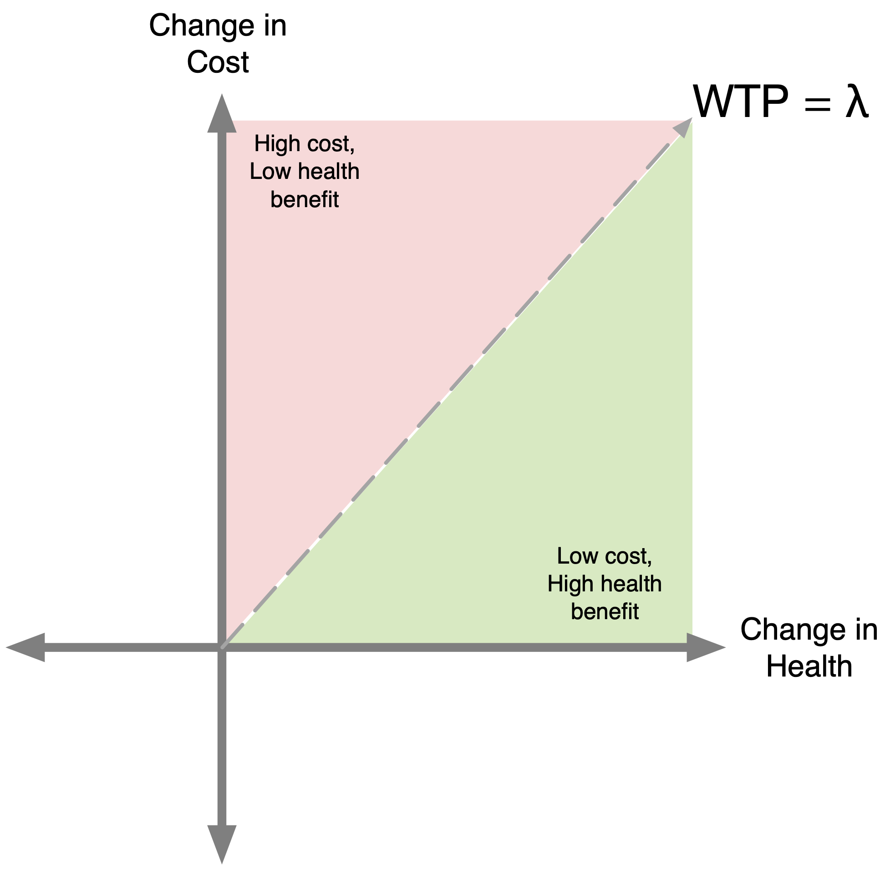¿Cómo orientan los umbrales del CEA la toma de decisiones?
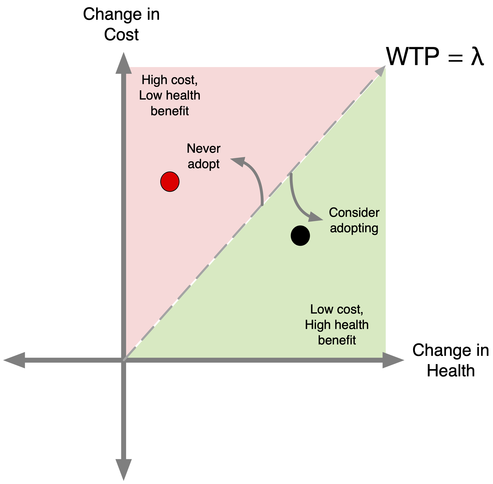¿Cómo guían los umbrales del CEA la toma de decisiones?
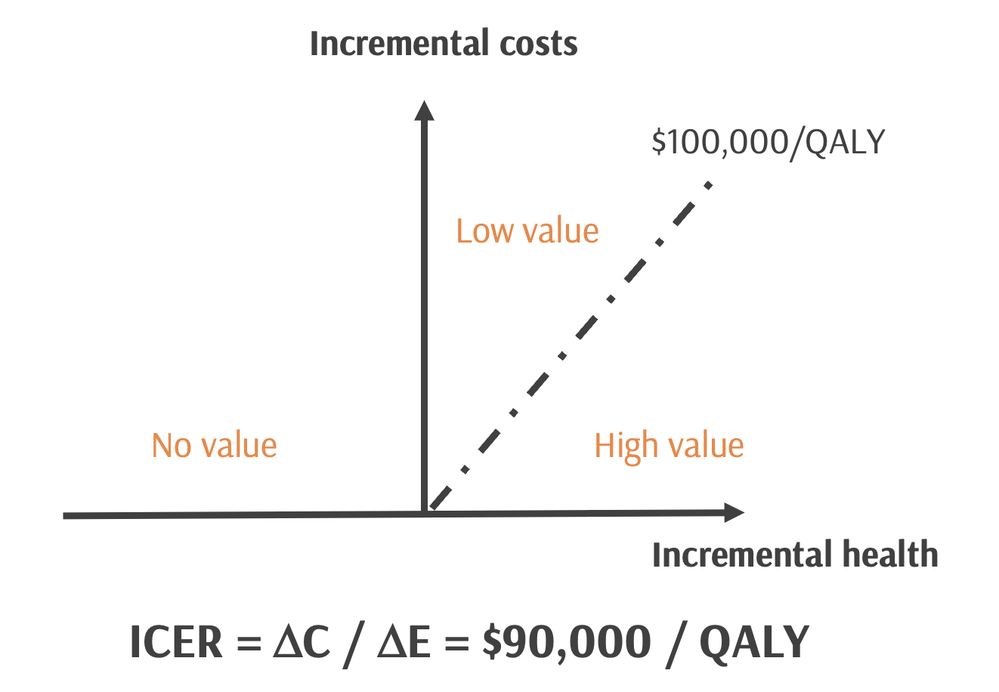¿Cómo sabemos si algo es “de alto valor” frente a “de bajo valor” o “sin valor”? o “sin valor”?
Supongamos que comparamos la vacunación antigripal con la no vacunación & que nuestra relación coste-eficacia arroja un precio por unidad de beneficio de \90.000 $ / AVAC ganado
[PREGUNTA A CLASE] - ¿Se consideraría esto de “alto valor”?
Este precio debe compararse con un valor de referencia o umbral que represente lo que la sociedad está dispuesta a pagar por las mejoras sanitarias o los costes de oportunidad asociados al desplazamiento de intervenciones dentro de un presupuesto fijo
En EE.UU., el valor de referencia se sitúa en torno a los 100.000 $/QALY, según las estimaciones de la estimaciones de la disposición a pagar
El valor supuesto de un umbral es realmente importante porque determina en última instancia cómo debe invertir la sociedad en atención, lo que que, en última instancia, repercute en la salud general de la población.
Todo lo que supere este umbral se considerará coste-efectivo (atención de bajo valor)
Todo lo que esté por debajo se considerará de alto valor (ganar cada años de vida ajustados por calidad a un coste menor).
Todo lo que se sitúe a la izquierda se considerará atención de valor NULO.
Esto es muy importante porque… ***Los recursos invertidos en intervenciones de bajo o sin valor podrían aplicarse mejor a estrategias de prevención y estrategias de prevención y tratamiento más eficaces que la salud de la población.
CEA Thresholds

CEA Thresholds

CEA Thresholds

CEA Thresholds
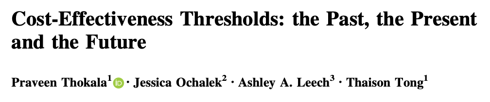Se han estimado los umbrales de diferentes maneras: - “del lado de la oferta” (Reino Unido y Europa) - “del lado de la demanda” (EE.UU.) - consumo per cápita (EE.UU./LMICs)
Notas (1) Hay diferentes formas de determinar un umbral rentable & se hace de forma un poco diferente en todo el mundo, de lo que hablamos en un artículo reciente en el que colaboré con colegas del Reino Unido, en el que se analiza la evolución de estos umbrales.
Algunos países, como el Reino Unido, utilizan lo que se ha dado en llamar “umbral de la oferta”. “umbral de la oferta”, que representa la noción de coste de oportunidad. coste de oportunidad: si la salud generada por una intervención intervención del NICE, por ejemplo, es mayor que la salud si el dinero se hubiera gastado en otra cosa. otra cosa, con un presupuesto fijo.
Otra forma en que países como EE.UU. han definido los umbrales de EC es lo que se denomina una perspectiva del “lado de la demanda”, o la la “disposición a pagar” de la sociedad por las mejoras sanitarias. Sigue habiendo un coste de oportunidad pero desde la perspectiva de los bienes y servicios que estaríamos y servicios a los que estaríamos dispuestos a renunciar por esos beneficios salud.
Asimismo, otra forma en que los países han considerado el umbral en términos de consumo per cápita, de acuerdo con la idea de que de que las personas que viven en países con mayores ingresos pueden y están dispuestas a pagar más por la salud. pagar más por la salud, lo que tiene un sentido intuitivo. :::
Coste de oportunidad (“del lado de la oferta”)
La decisión debe basarse en el valor de aquello a lo que se renunciará como consecuencia de ese coste.
- Se conoce como “coste de oportunidad”.
Si se comprometen recursos para financiar una intervención, entonces no están disponibles para financiar y realizar otras (shopping spree de compras).
El coste de oportunidad de un compromiso de recursos es la salud El coste de oportunidad de un compromiso de recursos es la salud a la que se renuncia porque esas “otras” intervenciones de las que dispone el sistema sanitario no pueden llevarse a cabo. disponibles para el sistema sanitario.
Fuente: Véase K Claxton sobre la estimación del umbral NICE en el Reino Unido / Woods et al, & otros
Coste de oportunidad (“del lado de la oferta”)
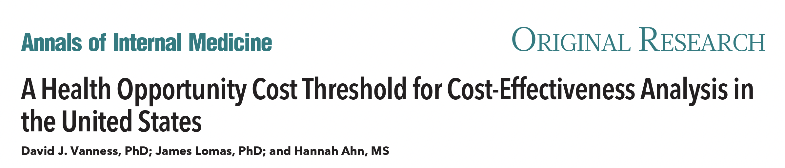- Esta es la estimación de la CEA más cercana a la “oferta” a la que se ha acercado EE.UU. a
- Esta simulación examinó el coste de oportunidad atribuido a las personas que que abandonan el seguro médico debido al aumento de las primas (lo que suele ocurrir cuando los costes de intervención son muy elevados: a menudo son los consumidores los que soportan la carga). suelen ser los consumidores los que soportan la carga)
- Los autores concluyeron que el umbral debería situarse en torno a los 100.000 $/QALY (que es lo que se suele utilizar en Estados Unidos).
- Pero los académicos británicos sostienen que no se trata de un coste de oportunidad real de oportunidad porque no evalúa el coste de oportunidad de por otras alternativas más eficaces (pero a menudo más costosas). costosas).
- ya sea dentro del sector sanitario o desplazando otros programas en otros sectores debido a lo mucho que gastamos en sanidad
- y hay muchas otras cosas que considerar, como el efecto del aumento de los costes sanitarios en los copagos de los pacientes, las esperas, etc. en los copagos de los pacientes, los tiempos de espera, la generosidad de los planes de las empresas o en los seguros públicos. los planes de las empresas o los seguros públicos.
Coste de oportunidad (“del lado de la oferta”)
Si no se tiene en cuenta el presupuesto con el que se opera, entonces algunos medicamentos podrían ocupar la mitad del presupuesto y desplazar intervenciones que producen beneficios significativos para la salud. aumentar las primas o quitar dinero a otros sectores.
Los académicos han argumentado que el umbral debería ser más bajo o más conservador para los medicamentos más caros. El NICE utiliza un umbral de impacto presupuestario de 20.000 libras esterlinas. (NICE utiliza un umbral de impacto presupuestario de 20.000 GBP/QALY para estas terapias de precio más elevado, frente a 30.000 GBP/QALY). frente a 30.000 GBP/QALY para otras)
Disposición a pagar (“del lado de la demanda”)
Dado que nuestro sistema sanitario es más complicado y no tenemos y no tenemos necesariamente un presupuesto “fijo”, los EE.UU. han los umbrales en función de lo que se suele denominar criterios de “demanda” o “disposición a pagar”, que también puede representarse como la disposición a renunciar a otros tipos de consumo para mejorar la salud.
Esta disposición a pagar se ha derivado de encuestas y también de lo que Medicare ha estado dispuesto a pagar por intervenciones
Hay quien sostiene que conocer la disposición a pagar de una población es importante, sobre todo en un estudio único. población es importante, sobre todo en un sistema de pagador único financiado que se financia a través de la seguridad social. la toma de decisiones
Pero existe una enorme variación en los estudios sobre la disposición a pagar. de los estudios sobre la disposición a pagar. vida (mayor VDP).
Esta breve perspectiva ofrece una visión general de los umbrales umbrales que hemos utilizado en EE.UU. en el pasado y en qué se basan en qué se basan (han sido en gran medida arbitrarios). recomendamos su lectura
CEA Thresholds in LMICs
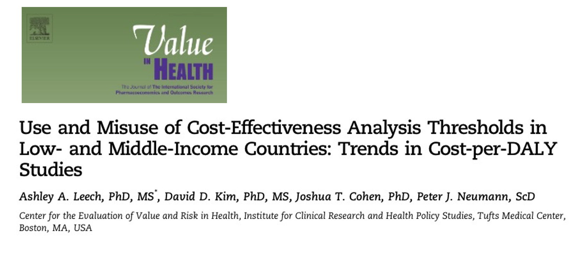Otros umbrales que han utilizado los países se basan en el PIB per cápita. PIB per cápita; principalmente el umbral de 1-3X PIB per cápita
Aunque este intervalo de umbrales se corresponde aproximadamente con lo que se ha convertido en convención para los países de renta alta (1X PIB per cápita en EE.UU. es 60.000 dólares y 3 veces ese valor es el límite superior que utilizamos. 50.000 como límite inferior, 100.000 como base y 150.000 como límite superior). como extremo superior)
PERO el consumo per cápita en los países más ricos supera el consumo per cápita en los países de renta baja y media. per cápita de los países de renta baja y media en uno o dos órdenes de magnitud. órdenes de magnitud y, por tanto, algunos analistas sostienen que el gasto sanitario debería representar una parte menor del PIB per cápita per cápita en los países de renta baja y media.
CEA Thresholds in LMICs {.smaller} (Umbrales de CEA en PIBM)
- Las anteriores directrices de la OMS recomendaban a los países utilizar las siguientes pautas: Una intervención es coste-efectiva si el coste/ AVAD evitado es inferior a 1-3 veces el PIB per cápita del país
- Algunos han argumentado que las directrices de la OMS pueden ser demasiado altas y dar lugar a la adopción de intervenciones que desplacen a servicios que proporcionan mayores beneficios sanitarios.
- Sugieren que 0,5 PIBpc es un valor de referencia más apropiado para los países de renta baja y 0,71 PIBpc para los de renta media. bajos y 0,71 PIBpc para los países de ingresos medios (véase Woods et al 2016)
Los analistas también han argumentado que el umbral debería ser más bajo para estos países basándose en una perspectiva de presupuesto sanitario
En Perú, por ejemplo, un estudio halló que la adición de un tratamiento del cáncer de mama de mama podría ser rentable según el criterio general de 1 a 3 veces el PIB per cápita. per cápita; sin embargo, el coste de añadir el nuevo fármaco superaría el presupuesto total de Perú para el cáncer de mama. superaría todo el presupuesto de Perú para el tratamiento del cáncer de mama.
Umbrales de ACE en PIBM

Se puede ver en mi artículo sobre esto –
Encontramos:
La proporción de estudios PUBLICADOS que citan un umbral de 1 a 3 veces el PIB per cápita ha aumentado con el tiempo. per cápita ha aumentado con el tiempo y esto se corresponde en gran medida con el reconocimiento de este umbral por parte de la OMS a principios de la década de 2000. Antes de esto, la mayoría de los estudios no citaban ningún umbral u otros umbrales de EC.
Desde entonces, la OMS ha dejado de recomendar este umbral, ya que ha recibido MUCHAS reacciones en contra, incluida mi ponencia.
Hasta que encontremos una medida mejor, el DSP3 y otros académicos han estimado umbrales más conservadores (diapositiva anterior) que yo para los PIBM y NO utilizaría los supuestos per cápita.
Pero aún no tenemos una estimación perfecta del umbral
VIH Ejemplo anterior
| Strategy | Incremental Cost | DALYs Averted | Incremental Cost per DALY Averted | Status |
|---|---|---|---|---|
| No prophylaxis | 0 | 0.00 | ||
| TMP-SMX | 4,498 | 2.56 | 1,757 | |
| TMP-SMX, azithromycin | 1,158 | 0.48 | 2,413 | |
| TMP-SMX, azithromycin, fluconazole | 2,652 | 0.56 | 4,736 | |
| TMP-SMX, azithromycin, fluconazole, ganciclovir | 12,523 | 1.02 | 12,277 | |
| TMP-SMX, fluconazole | 1,102 | -0.03 | Dominated (Strong) | |
| TMP-SMX, ganciclovir | 6,032 | -0.40 | Dominated (Strong) | |
| TMP-SMX, fluconazole, ganciclovir | 1,270 | -0.03 | Dominated (Strong) | |
| TMP-SMX, azithromycin, ganciclovir | 8,216 | 0.23 | Dominated (Extended) |
VIH Ejemplo anterior
- Si nuestro umbral de CE fuera 2 veces el PIB (PIB = $2.500), ¿qué opción elegiríamos elegiríamos como responsables de la toma de decisiones?
- Si nuestro umbral de EC fuera 1x PIB (PIB = $2.500), ¿qué opción elegiríamos como responsables de la toma de decisiones?